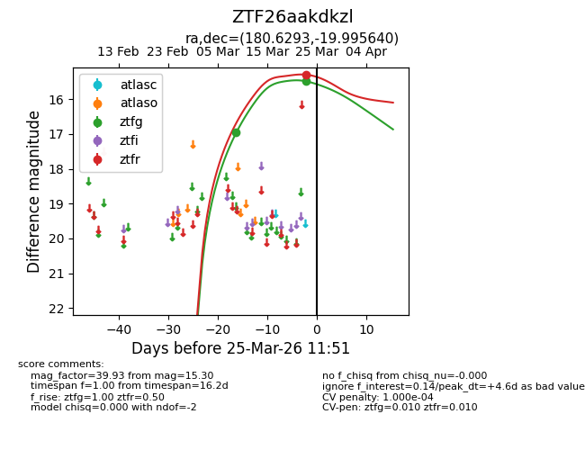
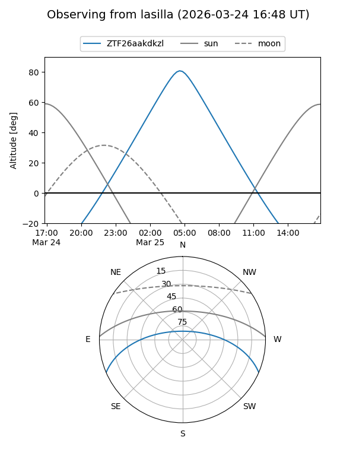
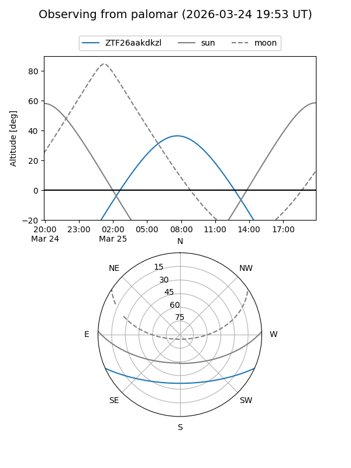
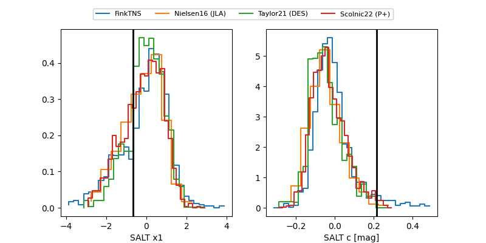

ZTF26aakdkzl
Target ZTF26aakdkzl at 2026-03-25 11:54
Aliases and brokers:
FINK: link
Lasair: link
ALeRCE: link
alt names
ZTF26aakdkzl (ztf,fink_ztf)
Coordinates:
equatorial (ra, dec) = 180.6293,-19.99564
equatorial (HMS+DMS) = 12:02:31.04,-19:59:44.31
galactic (l, b) = (287.5397,+41.40935)
Flags:
likely cv
Photometry:
last ztfg=15.48, ztfr=15.30
2 ztfg, 1 ztfr detections
Lightcurve

Visibility


Additional plots
